先说管道，就是个特殊符号，|，最简单的例子，echo hello|wall，echo是输出一个字符串，wall是读取输入，然后给所有正在登陆的用户发送消息，用管道连接起来，效果就是，把echo的输出，作为wall的输入，结果就是，直接给所有正在登陆用户发送hello，不需要任何输入。
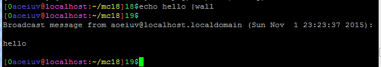
然后结合上一课的命令，试着理解下面这一串命令。
cat /etc/passwd|grep bash|grep -v -e "root\|aoeiuv\|student"|awk -F ":" '{print $1,$5}'
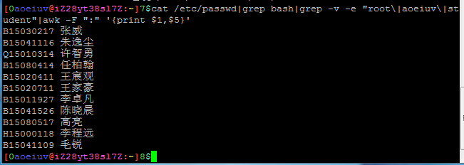cat /etc/passwd|sed -n "/^[A-Z][0-9]\{8\}/p"|awk -F ":" '{print $1,$5}'
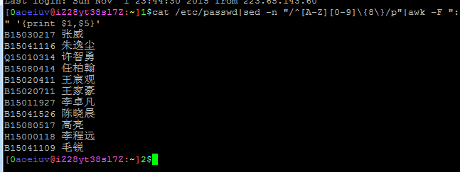
然后是重定向，和管道有一点点像，管道是把一个输出导入另一个命令作为输入，重定向是把输出导入到文件，或者把文件作为输入。
先说一个词，“文件描述符”，file description,以前说过，Linux主要是c语言写的，这个词和C语言有些关系，Linux上的c语言，打开的文件都可以存为int类型的变量，也就是用一个数字去代表这个文件，或者说用这个数字去描述这个文件，这个数字就是“文件描述符”,在/proc/进程ID/fd/这个目录下的每个文件(软链接)代表这个进程的一个文件描述符，重定向实际上就是改这些文件描述符，先说3个特殊的文件描述符，012，默认是都指向控制台tty，简单的说就是从屏幕上输入输出：
0是标准输入，c语言的stdin，就是打开的这个，c语言的scanf和c++的cin就是从这里读。
1是标准输出，对应c语言的stdout，c语言的printf和c++的cout就是写入这里。
2是错误输出，就是专门用来输出错误消息的，对应c语言的stderr,perror和c++的cerr,clog。
有没有注意到，这里1和2都是输出，为何要搞两个呢，主要就和重定向有关。
grep "" * 1>/tmp/grep1 2>/tmp/grep2
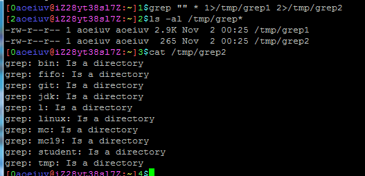
这里用grep比较文艺的输出当前目录下所有文件，显然有的东西不能输出，比如文件夹，这里的1>/tmp/grep1就是把1号文件描述符重定向到文件/tmp/grep1，2>/tmp/grep2就是把2号文件描述符重定向到文件/tmp/grep2,然后能看到上述命令并没有输出，但是多了两个文件，分别存着grep命令的输出和错误输出，可以看到错误输出里都是些关于出错的情况，也就是说重定向可以把错误消息与普通消息分离开，以便后续处理。
再来个输入重定向的，把文件/tmp/grep2当作wall命令的输入。
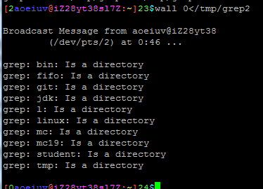
这格式应该比较好理解的吧，学c++的可能觉得和cin,cout有点像，0/tmp/grep1是把文件描述符1输出到文件/tmp/grep1，>输出重定向会覆盖文件原有的内容，还有个输出重定向>>，两个尖括号表示输出追加到文件末尾。
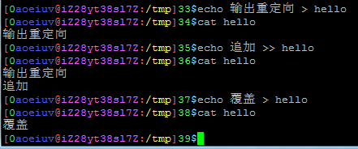
输入重定向<默认就是0，所以0可以不写，输出重定向>默认是1，所以1可以不写，重定向实际上就是读打开和写打开，还有个读写打开的<>，如果以后有讲C语言，可能会具体讲，之前说过的，Linux里面，各种设备都是文件的形式，自然也可以这样重定向到设备文件，但一般设备文件不这样重定向写入读出，有个dd命令专门读写设备文件的，先来两个特殊的设备文件，/dev/null，黑洞设备，写入的东西全部丢弃，不要的输出就重定向到这里，/dev/zero，0设备，读出来无限的0，需要0时就从这里读。
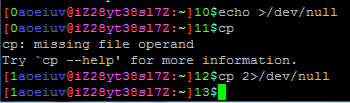
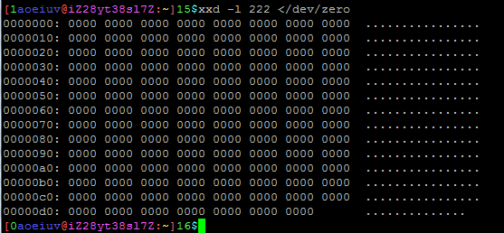
还有两个能读出随机数的，/dev/random，随机性高，随机数有限，系统运行时不断生成，/dev/urandom，随机性低，随机数无限，有限的读到不够的时候会阻塞，也就是卡住。
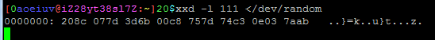
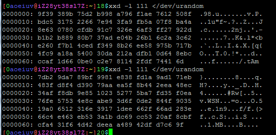
还有一类特殊的设备文件，有名管道，用一个命令mkfifo产生，ls -l看见第一个字符是p。
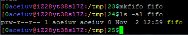
作用是，一个进程输出到有名管道，另一个进程从这个有名管道读这些数据。
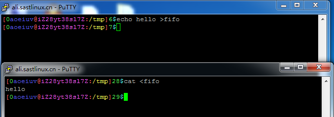
说到有名管道，自然有个无名管道，工作方式和有名管道一样，但是无名就在于无名管道不是以文件形式存在的，但是是可以在/proc/进程ID/fd/目录下看见代表这个无名管道的软链接，正常来说，除非做Linux开发，不然用不到，前面说的Shell的那个管道|，实际上就是用到了无名管道，echo Hello |wall，就是把echo命令的输出Hello写入一个无名管道，wall从这个无名管道读取出来作为输入，管道fifo其实就是first in first out,先进先出，队列。
还有一种另类的输入重定向，经常在Shell脚本中用来生成指定内容的新文件。
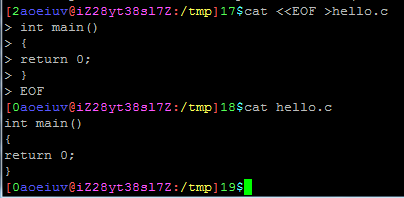
这种<<的输入重定向的效果是，在命令执行前先输入所有输入，EOF表示用EOF这三个字符单独成行代表输入结束，当然，这EOF也可以换成别的任意字符串，而cat是把所有输入原样输出，再把cat的输出重定向到文件，这样就能生成指定内容的文件，这在正常的Shell中效果并不明显，要是用在脚本中就能体现出作用，总之就是用写好的一段内容代替键盘的输入，执行脚本的时候不需要用键盘输入。
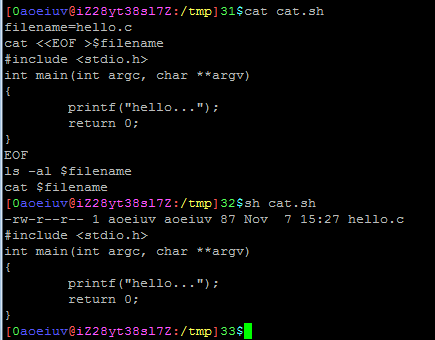